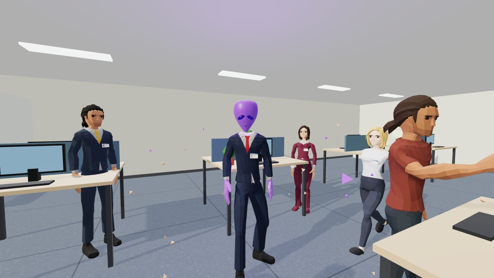

Departamento de Recursos Não Humanos: ache os alienígenas no escritório antes das 18h
por Lucca Pinto · 2026-10-17

Cópias alienígenas estão substituindo funcionários da Interplan S.A., e elas imitam quase tudo. Você anda pelo andar em primeira pessoa, lê o memorando do RH com os boatos do dia, examina de perto, pede o crachá e elimina só os impostores: 14 sinais, de cabeça que gira para trás a uma letra trocada no crachá. Cinco dias, três falhas e você está fora.
js/dados.jsElenco, os 14 sinais, a escala dos cinco dias e o sorteio com sementejs/pessoas.jsMonta cada funcionário trocando peças, liga os sinais por cima da animação e faz a revelaçãojs/escritorio.jsO andar, o grafo de caminhos e as caixas de colisãojs/jogo.jsPrimeira pessoa, rotina das pessoas, crachá, disparo, dias e relatórioprovas.mjsAs 12 provasCREDITOS.mdDe onde vem cada personagem e sob qual licençaO total (US$ 54,52) é o caminho inteiro até o jogo, e a maior parte dele não está no jogo: um kit de funcionários feito em Blender (oito rodadas de redesenho), um protótipo de estilo em superfície contínua e o teste do pacote Quaternius, que foi o que o dono do repo aprovou. Só a construção do jogo, a partir do retrato do contador tirado às 00:25 de 17/10, custou US$ 15,05: 112 chamadas do Opus, 270.653 tokens de saída, 19.187.121 de leitura de cache. O cache é o maior número e não é o custo: cada chamada reenvia o contexto acumulado e o cache evita pagá-lo cheio.